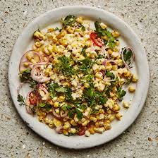

Raw corn salad

Description
Quick, healthy, and tasty ram corn salad for the summer. No cooking
required. Uses fresh, raw, sweet corn on the cob, avacado, and it's easy
to tailor to your own tastes.
Ingredients
- 2 ears corn, kernels cut from the cob
- 1 pint cherry tomatoes, halved
- 1 cucumber, halved lengthwise and sliced
- 1 avacado, diced
- 1 small sweet onion, chopped
- 1/4 bunch fresh cilantro, chopped, or to taste
- 1 green onion, green part only, thinly sliced
- 1 drizzle extra-virgin olive oil
- 1 lime
- salt and ground black pepper to taste
Steps
-
Mix corn kernels, tomatoes, cucumber, avacado, onion, cilantro, and
green onion together in a large bowl. Add a drizzle of olive oil.Squeeze
lime juice into the bowl and season with salt and pepper.